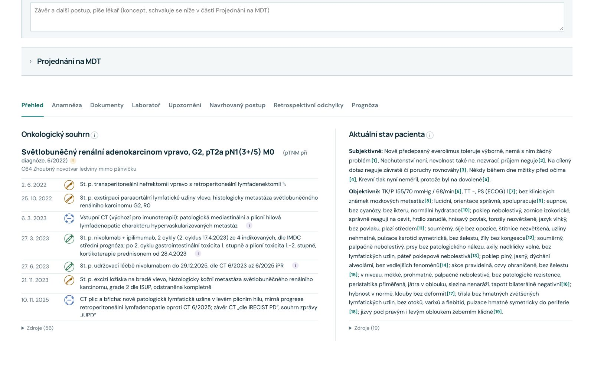

Od informací
k lepším klinickým rozhodnutím.
Jeden pacient. Všechny podstatné informace. Strukturovaný souhrn, časová osa diagnostiky a léčby a odkazy na původní dokumenty.
Lékař si informace ověří přímo ve zdroji. Prototyp pro ostravský neuroonkologický tým.
Co když nám unikne důležitá informace?
Představte si, že jste onkologický pacient. O vaší další léčbě rozhoduje tým odborníků, který má před sebou desítky stran dokumentace a jen několik minut na diskusi.
Co když v dokumentaci zůstane přehlédnutá informace, která může ovlivnit další postup? Nebo existuje klinická studie, kterou nikdo nestihl prověřit?
Příprava jednoho pacienta trvá někdy i 20 minut. Na jednom MDT jich přitom může být 20 až 40.
Jeden pacient.
Všechny podstatné informace.
Na jednom místě strukturovaný souhrn, časová osa diagnostiky a léčby, vývoj laboratorních hodnot a chybějící podklady. Prototyp vznikl pro ostravský neuroonkologický tým.
- Souhrn a časová osa z dokumentace pacienta
- Laboratorní hodnoty v čase, s původními jednotkami
- Chybějící podklady vidíte hned

Každý údaj
vede k původnímu dokumentu.
Klik na odkaz otevře původní stránku se zvýrazněnou citací. Nejistá místa ze skenů jsou označená k ověření a nic se nedoplňuje odhadem.
Nejen sumarizace.
Podpora rozhodování.
Nechceme vytvořit jen další AI sumarizátor. GLIDE MDT upozorňuje na možné odchylky od doporučených postupů, zpřístupňuje relevantní klinické důkazy a pomáhá s přípravou závěrů MDT. Rozhoduje vždy lékař.
- Doporučení citovaná doslovně, se zdrojem
- Možné odchylky od doporučených postupů
- Párování pacientů s klinickými studiemi připravujeme
Stadium M0 v dokumentu zapsáno jako „MO“
„Histol. světlobuněčný renální adenokarcinom G2, pT2a pN1(3+/5) MO“
Ambulantní zpráva, strana 1 · otevře se na citaci
M0 jen dle vstupní dokumentace; nejistý znak je označen k ověření, nikdy se nedoplňuje odhadem.
Dokumentace
PDF z počítače nebo z telefonu, žádost o konzultaci přes FHIR
Čtení a ověření
Nejistá místa označená k ověření, citlivé údaje začerněné
Souhrn se zdroji
Časová osa, laboratoř v čase, chybějící podklady
Závěr MDT
Lékař schválí závěr, úkoly a report vzniknou z něj
Víme, že identifikace problémů
má smysl.
V projektu GLIDE jsme systematicky identifikovali možné odchylky od guidelines a výsledky diskutovali s klinickým týmem.
Medián času od operace po radioterapii
Medián času od doporučení MDT po zahájení radioterapie
Pozorováno v následujícím období na malém vzorku. Není to důkaz kauzality ani výsledek tohoto prototypu, ale povzbudivý signál, že systematická zpětná vazba může být součástí zlepšování péče.
Kolik času můžeme
vrátit lékařům?
Modelový odhad, který potřebujeme klinicky ověřit. Ještě důležitější je, co s tímto časem uděláme: věnovat ho kvalitnější diskusi a pacientům.
„Chceme pomoci zajistit, aby kvalita onkologického rozhodování nezávisela na tom, ve které nemocnici se pacient léčí.“Tým GLIDE MDT
Hledáme klinické partnery.
Začali jsme neuroonkologií v Ostravě. Stejné problémy řeší týmy u karcinomu plic, prsu, kolorektálního karcinomu i dalších diagnóz. Hledáme klinické partnery, se kterými tento potenciál bezpečně ověříme v reálné praxi.